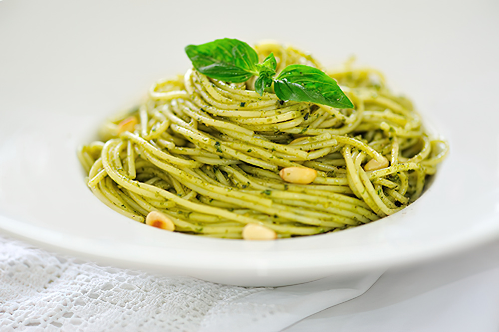
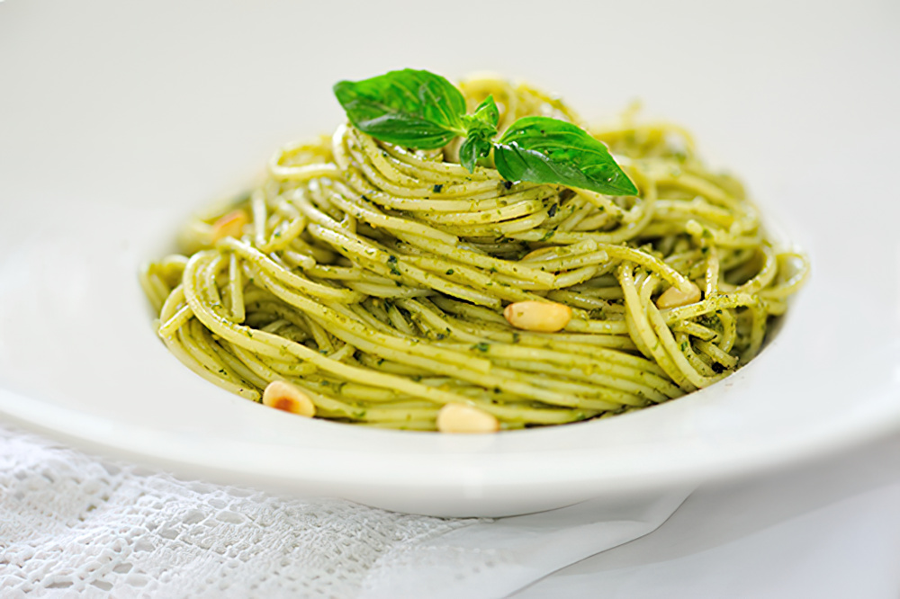
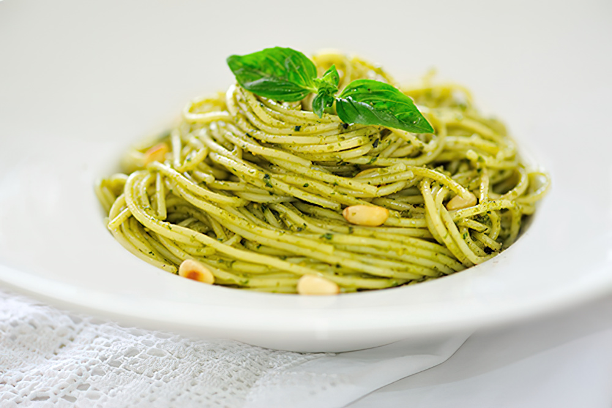
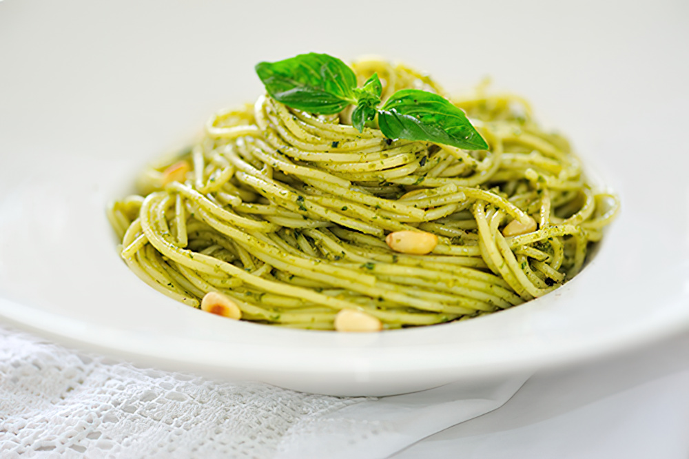

Bring 6 quarts of water to a boil, and add enough salt to make it a bit less salty than the sea (about 2-3 tablespoons).
Meanwhile, place the pesto in a sauté pan or a shallow mixing dish, and set aside.
Cook the pasta in the boiling water until almost al dente, and drain, reserving 1 cup of the pasta's cooking water.
Add the pasta to the pesto in the sauté pan or shallow mixing dish but do not place overheat! Toss to combine, and add a drizzle of extra virgin olive oil. If needed, add a small amount of the pasta cooking water to thin the pesto.
When the pasta is completely coated with the pesto, place it into a warmed serving dish, and serve.